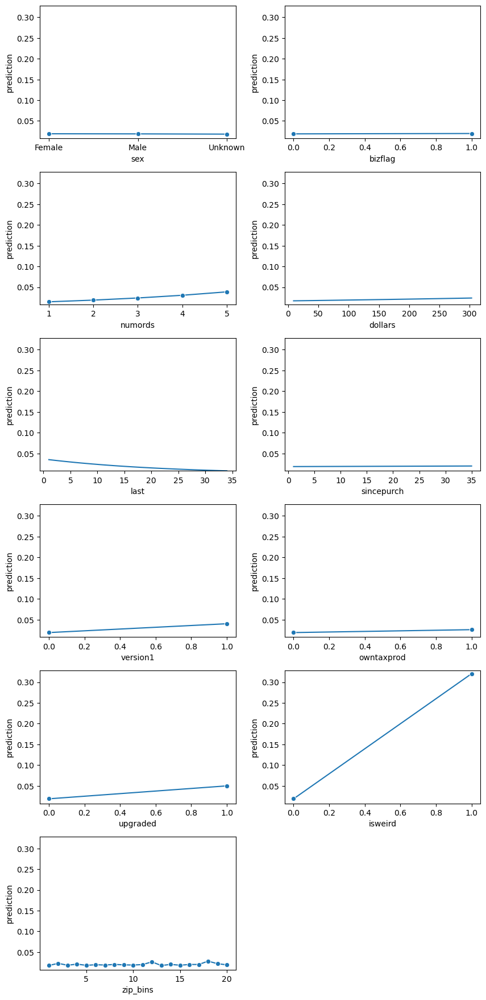
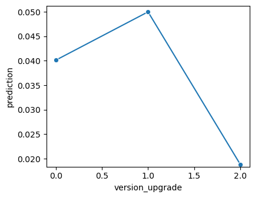
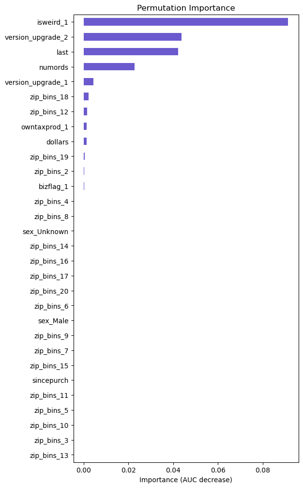
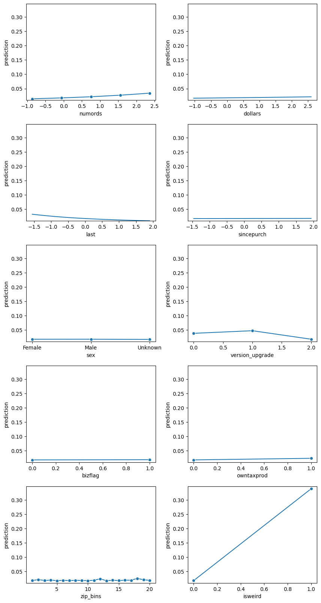
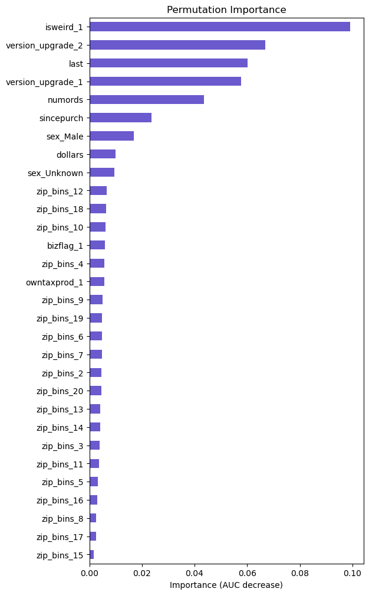

Intuit Quickbooks Upgrade
Introduction
This project builds a predictive response model for Intuit’s QuickBooks upgrade upsell campaign. The dataset (intuit75k.parquet) contains 75,000 small businesses randomly sampled from the 801,821 businesses that received the wave-1 mailing. Each business record includes customer attributes and purchase history that can be used to estimate the likelihood of upgrading.
The response variable res1 indicates whether a business purchased QuickBooks version 3.0 through Intuit Direct after receiving the wave-1 offer. Because the case materials have been modified (variables added, removed, and recoded), the analysis relies on the updated variable definitions provided in this report rather than Exhibit 3 in the course reader.
Objective
Deliver a wave-2 targeting approach that increases incremental profit versus untargeted mailing. Specifically, we (1) estimate each business’s likelihood of responding to wave-2, (2) translate predicted responses into expected profit using campaign economics, and (3) recommend a mailing cutoff rule that sends offers only when expected return exceeds break-even.
Data and Problem Setup
Data source and unit of analysis
Each row represents a small-business customer in Intuit Direct’s mailing file. The analysis uses the sample provided in intuit75k.parquet, drawn from wave-1 recipients.
Outcome definition
res1is the response indicator for the wave-1 mailing (“Yes” = purchased QuickBooks 3.0 through Intuit Direct; “No” otherwise).
- The modeling task is a binary classification problem used for ranking customers for wave-2 targeting.
Predictor variables (summary)
The predictors describe customer location, business indicators, and purchase behavior over the prior 36 months, plus product/version history. A full data dictionary is included below.
Train/validation split
training= 1 indicates the training sample (70%).
training= 0 indicates the validation sample (30%).
Model selection and thresholding decisions are based on validation performance.
Data dictionary
| Variable | Description |
|---|---|
id |
Small business customer ID |
zip5 |
5-digit ZIP code (00000 = unknown, 99999 = international ZIPs) |
zip_bins |
ZIP-code bins (≈20 roughly equal-sized bins from lowest to highest ZIP number) |
sex |
Gender identity: Female, Male, or Unknown |
bizflag |
Business flag: address contains a business name (1 = yes, 0 = no/unknown) |
numords |
Number of Intuit Direct orders in the previous 36 months |
dollars |
Total dollars ordered from Intuit Direct in the previous 36 months |
last |
Months since last Intuit Direct order (within the previous 36 months) |
sincepurch |
Months since original (non-upgrade) QuickBooks purchase |
version1 |
1 if current QuickBooks is version 1; 0 if version 2 |
owntaxprod |
1 if customer purchased tax software; 0 otherwise |
upgraded |
1 if customer upgraded previously (vs. purchasing a base version); 0 otherwise |
res1 |
Response to wave-1 mailing (“Yes” / “No”) |
training |
Split indicator (1 = training, 0 = validation) |
Exploratory Analysis
Response rate by ZIP bin
Wave-1 response varies materially across zip_bins. One segment is a clear outlier: zip_bins = 1 has a response rate of 0.2185, while all other bins fall between 0.0331 and 0.0519. Bin sizes are comparable across segments (~3,700–3,800 customers), so the difference is not driven by uneven volume.
Wave-1 response rate by ZIP bin (sorted by response rate)
| zip_bins | response_rate (res1_yes) |
n |
|---|---|---|
| 1 | 0.218525 | 3757 |
| 18 | 0.051934 | 3774 |
| 12 | 0.049281 | 3754 |
| 19 | 0.043747 | 3726 |
| 2 | 0.043258 | 3745 |
| 4 | 0.041589 | 3751 |
| 17 | 0.039498 | 3747 |
| 20 | 0.039221 | 3748 |
| 10 | 0.038215 | 3742 |
| 11 | 0.037877 | 3749 |
| 7 | 0.037323 | 3751 |
| 16 | 0.037077 | 3749 |
| 6 | 0.036820 | 3748 |
| 8 | 0.036553 | 3748 |
| 9 | 0.036465 | 3757 |
| 14 | 0.036041 | 3718 |
| 15 | 0.035181 | 3752 |
| 3 | 0.034124 | 3751 |
| 13 | 0.034109 | 3782 |
| 5 | 0.033058 | 3751 |
Action taken. The outlier behavior in zip_bins = 1 is treated as a localized segment effect and is decomposed to ZIP5 to identify the driver.
ZIP5 drill-down within zip_bins = 1
Two ZIP codes within zip_bins = 1 account for the unusually high response rates at meaningful volumes:
ZIP5 segments within zip_bins = 1 with response_rate > 0.30 and n > 50
| zip5 | response_rate (res1_yes) |
n |
|---|---|---|
| 00801 | 0.412470 | 1668 |
| 00804 | 0.344086 | 186 |
These ZIP codes are captured explicitly in modeling using an indicator variable (isweird) to prevent the effect from being diluted across broader ZIP binning.
Confirming the anomaly ZIPs: 00801 and 00804
To determine whether the elevated response observed in zip_bins = 1 reflects a broader ZIP-level pattern, ZIP5 response rates were reviewed across the full dataset with minimum-volume filters (response rate > 0.20 and n > 40). Only 00801 and 00804 met these criteria. No other ZIP5 codes exhibited similarly high response rates at meaningful volume.
High-response ZIP5 segments (response_rate > 0.20, n > 40)
| zip5 | response_rate (res1_yes) |
n |
|---|---|---|
| 00801 | 0.412470 | 1668 |
| 00804 | 0.344086 | 186 |
These two ZIP codes are treated as a distinct segment in modeling through an indicator feature.
Modeling Approach
Baselines: logistic regression (LR1–LR2)
Feature engineering: anomaly indicator (isweird)
A binary feature, isweird, flags whether a customer is in the anomalous ZIP codes identified above:
isweird = 1ifzip5 ∈ {00801, 00804}, otherwise0.
This design isolates a localized geographic effect without relying solely on broader ZIP binning.
Baseline comparison: impact of isweird
To quantify the incremental value of the anomaly indicator, two logistic regression models were evaluated on the validation sample:
- LR1: baseline model using the original predictors
- LR2: LR1 plus
isweird
Both models use the same preprocessing (categorical encoding for discrete fields).
Validation confusion matrices
LR1 (baseline)
- TP = 749, FP = 6,188, TN = 15,209, FN = 354
LR2 (+ isweird)
- TP = 743, FP = 5,736, TN = 15,661, FN = 360
Validation profit metrics
Table 4. Profit comparison on validation sample
| Model | Profit (validation) | Projected profit | ROME |
|---|---|---|---|
| LR1 | 35,158.83 | 1,192,795.11 | 3.59 |
| LR2 | 35,444.61 | 1,202,490.81 | 3.88 |
Interpretation. Adding isweird improves profit and ROME relative to the baseline. The gain is driven primarily by a reduction in false positives (FP decreases from 6,188 to 5,736), which improves mailing efficiency without materially changing the count of false negatives.
LR1: baseline logistic regression
Adding the anomaly indicator (isweird) improved both validation profit and ROME relative to the baseline logistic regression, indicating better campaign efficiency under the profit framework. To interpret what the baseline model is learning, Table X summarizes the key signals from the LR1 coefficient output.
Model fit (LR1)
- AUC: 0.755
- McFadden pseudo R²: 0.114
- Overall model test: χ²(29) = 2289.8, p < 0.001
- Sample size: 52,500 (training)
These statistics indicate the model has meaningful discriminative power for ranking customers, although the pseudo R² suggests substantial unexplained variation remains—typical for response modeling with sparse outcomes.
Key drivers (LR1)
Odds ratios (OR) below are interpreted holding other variables constant:
Prior upgrade behavior (
upgraded=1): OR = 2.616 (p < 0.001)
Customers with prior upgrade history are much more likely to respond to the upgrade offer.Currently on version 1 (
version1=1): OR = 2.113 (p < 0.001)
Being on an older version is strongly associated with upgrade likelihood.Ordering frequency (
numords): OR = 1.259 per additional order (p < 0.001)
More prior orders correlate with higher probability of responding.Recency (
last): OR = 0.957 per additional month since last order (p < 0.001)
Longer time since last purchase reduces response likelihood, consistent with customer inactivity.Tax product ownership (
owntaxprod=1): OR = 1.356 (p = 0.003)
Ownership of related products is associated with higher response propensity.Spend (
dollars): OR ≈ 1.001 per dollar (p < 0.001)
The per-dollar effect is small by construction; the practical impact depends on the spend range across customers.
Limited effects (LR1)
- Gender (
sex) and business flag (bizflag) are not statistically significant in the baseline specification. - Tenure since original purchase (
sincepurch) is not significant once recency and purchase behavior are included.
Geographic effects (LR1)
zip_bins shows large differences relative to the reference bin, with most bins having substantially lower odds than the reference category. This aligns with the earlier EDA result that a localized geographic segment behaves differently and supports isolating that segment explicitly (rather than relying on binning alone).
Figure 1. LR1 prediction profiles across key predictors

Response probability is dominated by geography: zip_bins = 1 is a clear outlier, while other bins remain near a low baseline. Behavioral variables show predictable structure—probability increases with numords and is higher for upgraded = 1 and version1 = 1. Recency is strongly negative: response probability declines as last increases. sex, bizflag, and sincepurch are nearly flat over the plotted ranges, suggesting limited incremental value in this specification.
Figure 2. LR1 permutation importance (AUC decrease)

Permutation importance ranks zip_bins as the strongest driver of model discrimination, followed by upgraded and last. numords and version1 provide moderate contribution; remaining variables add minimal lift. The concentration of signal in the geography feature supports isolating the outlier ZIP behavior explicitly (via isweird) rather than relying on broad ZIP binning alone.
LR2: enhanced logistic regression (anomalous ZIP isolation)
LR2 extends the baseline model by adding isweird, a binary indicator for ZIP codes 00801 and 00804. This feature captures a localized geographic segment with unusually high wave-1 response.
Model fit (LR2)
- AUC: 0.768 (vs 0.755 in LR1)
- McFadden pseudo R²: 0.148 (vs 0.114 in LR1)
- Overall model test: χ²(30) = 2965.6, p < 0.001
These changes indicate improved ranking performance after accounting for the anomalous ZIP segment.
Key coefficients (LR2)
isweird is the dominant effect in the model:
isweird = 1: OR = 24.6, p < 0.001
Customers in ZIP codes 00801/00804 have substantially higher odds of responding, even after controlling for purchase behavior and product history.
Core purchase-history signals remain stable and directionally consistent: - upgraded = 1: OR = 2.74, p < 0.001 - version1 = 1: OR = 2.18, p < 0.001 - numords: OR = 1.28 per additional order, p < 0.001 - last: OR = 0.956 per additional month since last order, p < 0.001 - owntaxprod = 1: OR = 1.38, p = 0.002
After introducing isweird, most zip_bins coefficients shrink toward neutrality and many become statistically insignificant, indicating that the earlier geographic pattern was primarily driven by the two outlier ZIP codes rather than broad differences across bins.
Variable importance
Figure confirms the same conclusion from a predictive standpoint. Permuting isweird produces the largest AUC degradation, followed by upgraded and last. zip_bins contributes relatively little once the outlier ZIP behavior is modeled explicitly.
Feature refinement: version path construction
Figure 3. LR2 permutation importance (AUC decrease)

isweird is the dominant driver of LR2 discrimination: permuting it produces the largest AUC drop, far exceeding any other feature. After isolating the 00801/00804 segment, zip_bins contributes little incremental lift, while upgraded and purchase recency (last) remain the strongest broad-based predictors outside the anomaly. This supports modeling the outlier ZIP behavior explicitly with isweird rather than relying on ZIP-bin effects that would blur a concentrated segment signal.
Figure 4. LR2 prediction profiles across key predictors

After adding isweird, the geographic spike shifts from zip_bins to the anomaly indicator. Predicted probability increases sharply when isweird = 1, while the zip_bins profile becomes largely flat, indicating limited incremental segmentation value once the outlier ZIPs are modeled explicitly. Purchase-history signals remain stable: probability increases with numords, and is higher for upgraded = 1 and version1 = 1, while last remains strongly negative.
On the validation sample, LR2 (baseline predictors + isweird, with zip_bins retained) achieves profit = 35,444.61 and ROME = 3.88, with projected profit of 1,202,490.81. The confusion matrix is TP = 743, FP = 5,736, TN = 15,661, FN = 360. Relative to LR1, the primary change is a reduction in false positives (fewer low-probability customers mailed), which improves campaign efficiency while keeping overall capture of responders comparable.
Consolidating version1 and upgraded
Figure 5. LR2 prediction profiles for key predictors

The prediction profiles show positive shifts for both version1 = 1 and upgraded = 1, but these fields describe overlapping aspects of product history and are not mutually exclusive. To make version behavior interpretable and usable for targeting, the two indicators are recoded into a single categorical feature, version_upgrade, representing mutually exclusive version paths.
Definition of version_upgrade (derived from version1 and upgraded)
version1 = 1,upgraded = 0→ category 0: currently on version 1, no prior upgrade (n = 16,050)
version1 = 0,upgraded = 1→ category 1: upgraded to version 2 (n = 15,629)
version1 = 0,upgraded = 0→ category 2: directly purchased version 2 (n = 43,321)
version1 = 1,upgraded = 1→ not observed in the dataset
This recode removes ambiguity in interpretation and prevents the model from splitting a single business concept across two correlated indicators.
Defining version_upgrade
version1 and upgraded describe overlapping aspects of product history and are difficult to interpret separately. They are recoded into a single categorical feature, version_upgrade, representing mutually exclusive version paths:
version1 = 1,upgraded = 0→version_upgrade = 0: currently on version 1, no prior upgrade (n = 16,050)
version1 = 0,upgraded = 1→version_upgrade = 1: upgraded to version 2 (n = 15,629)
version1 = 0,upgraded = 0→version_upgrade = 2: directly purchased version 2 (n = 43,321)
version1 = 1,upgraded = 1→ not observed in the dataset
This change is made for interpretability and reporting consistency. Model scoring is unchanged when version1 and upgraded are replaced by version_upgrade.
Figure 6. Predicted response by version path (version_upgrade)

Customers who previously upgraded to version 2 have the highest predicted response. Customers still on version 1 score next. Customers who directly purchased version 2 have the lowest predicted response, indicating lower incremental upgrade propensity under the wave-1 offer.
Benchmark: mail-to-all strategy
A mail-to-all (“spam”) strategy was evaluated as a benchmark to ensure that targeting adds incremental value versus sending wave-2 to every eligible business.
On the validation sample, mailing to all customers yields the following confusion matrix:
- TP = 1,103
- FP = 21,397
- TN = 0
- FN = 0
Financial results for the mail-to-all benchmark are:
- Profit (validation): 34,455.00
- Projected profit: 1,168,918.80
- ROME: 1.09
This benchmark underperforms the targeted logistic regression approaches (e.g., LR2), indicating that selective mailing improves profitability by avoiding low-probability customers. As a result, subsequent work focuses on models that improve ranking quality beyond logistic regression, including neural network classifiers and interaction specifications.
Neural network exploration
A simple multilayer perceptron (MLP) classifier with a single hidden unit was trained on the same inputs used in the logistic model (including isweird and version_upgrade). The objective of this step was to test whether a nonlinear learner identifies materially different structure or improves ranking beyond the logistic specification.
Figure 7. MLP (1-unit) prediction profiles across key predictors

Figure 8. MLP (1-unit) permutation importance (AUC decrease)

The prediction profiles and permutation importance ranking mirror the logistic results. isweird remains the dominant signal, followed by purchase recency (last) and version path (version_upgrade), with numords providing moderate lift. Most zip_bins indicators contribute little once the anomaly ZIP behavior is isolated.
A one-unit MLP is a minimal nonlinear extension and, in practice, behaves similarly to a generalized linear model for this feature set. Because this configuration did not surface new segment structure or materially different drivers, it was treated as a baseline neural-network check rather than a candidate final model.
Figure 9. MLP permutation importance with a larger hidden layer

Across both configurations, isweird remains the largest contributor to discrimination, confirming that the anomaly ZIP segment is the strongest signal in the data. Increasing model complexity shifts the relative importance among several features—most noticeably version_upgrade, last, sincepurch, and sex—indicating that nonlinear interactions may be present even when the top driver is unchanged. These shifts are treated as hypothesis-generating: they motivate testing explicit interaction terms in a constrained model (e.g., logistic regression with selected interactions) rather than relying on depth alone.
LR3: logistic regression with interactions
Deeper MLP configurations did not deliver a profit lift over the tuned logistic baseline, so interaction effects were tested directly within logistic regression. LR3 extends LR2 by adding three interaction specifications: sex × zip_bins, isweird × version_upgrade, and isweird × numords.
On the validation sample, LR3 improves results versus LR2: - Profit (validation): 35,940.90
- Projected profit: 1,219,324.02
- ROME: 3.92
What changed in LR3
- The anomaly ZIP segment remains the dominant effect:
isweirdOR = 22.22 (p < 0.001). - Version path separation remains strong:
version_upgrade[1]OR = 1.27 (p < 0.001) andversion_upgrade[2]OR = 0.42 (p < 0.001) relative to the reference category. - Among the interaction terms, the clearest incremental effect is
isweird × version_upgrade[2]OR = 1.62 (p = 0.002), indicating that within the anomaly ZIP segment, customers who directly purchased version 2 exhibit higher incremental upgrade propensity than the baseline version path. isweird × numordsis not supported (p = 0.296), suggesting that the anomaly ZIP uplift is largely additive with respect to ordering frequency.
Several sex × zip_bins coefficients are statistically significant, implying that geographic differences are not uniform across gender categories in some bins. Because this interaction family introduces many parameters, its value is assessed primarily by validation profit rather than by individual coefficient significance.
Model specification and validation performance
MLP1 is selected as the final scoring model because it delivers the highest projected profit on the validation sample among the evaluated approaches. Hyperparameters were chosen through cross-validated search over network depth, regularization, and learning rate. Recall was used during tuning to avoid missing responders, and the final selection criterion was validation profit.
The selected configuration uses a three-layer architecture (3, 3, 3) with L2 regularization alpha = 0.0095 (solver: Adam). Validation performance:
- Confusion matrix: TP = 768, FP = 6,292, TN = 15,105, FN = 335
- Profit (validation): 36,125.40
- Projected profit: 1,225,587.45
- ROME: 3.63
Interpretation: permutation importance (MLP1)
Figure 10. MLP1 permutation importance (AUC decrease)

The importance ranking is concentrated in a small set of features. isweird produces the largest AUC drop when permuted, indicating that the anomaly ZIP segment is the strongest discriminator.
Recommendation and Expected Impact
Recommended wave-2 targeting rule
Use the final scoring model (MLP1) to rank all wave-1 non-responders by predicted response probability. To account for lower expected responsiveness in wave-2, scale predicted probabilities by 50% of the wave-1 rate. Mail to customers whose adjusted probability exceeds the campaign break-even response rate:
- Mail if:
0.5 × p̂(response) ≥ 0.0235
This rule targets customers expected to generate positive incremental profit after mailing costs.
Expected financial impact
Applying the recommended targeting policy yields an expected projected profit of 1,225,587.45 from the wave-2 mailing under the stated wave-2 response adjustment and campaign economics. This materially outperforms a mail-to-all strategy and the logistic regression baselines evaluated during model selection.
Operational notes
- The model should be used for ranking and cutoff selection rather than as a literal probability forecast.
- Performance should be monitored after wave-2 results arrive, with particular attention to the stability of the anomaly ZIP segment captured by
isweird.
Conclusion
Wave-1 response behavior is concentrated in a small set of signals: a localized geographic segment (ZIPs 00801 and 00804) and purchase-history indicators such as version path, recency, and ordering frequency. These patterns were consistent across models and remained the primary drivers of response separation.
The selected modeling approach provides a practical scoring framework that can be reused for future waves. After wave-2, results should be reviewed to confirm that the anomaly ZIP segment and version-path effects remain stable, and the targeting cutoff should be recalibrated using observed wave-2 economics and response rates.